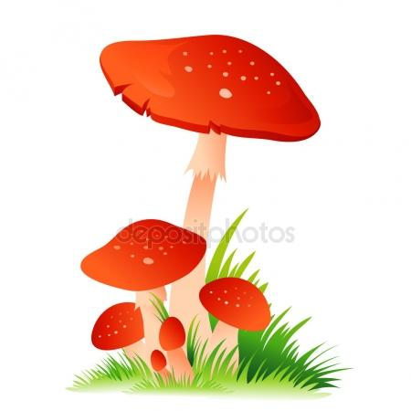

Для поиска нажмите "Ctrl+F"
Ядовитые грибы
Энтолома ядовитая
Энтолома представлена в местной российской флоре несколькими видами. Все они, без исключения, содержат в своих волокнах достаточно сильные токсины и яды. Однако отравление редко приводит к смертельному исходу. Чаще всего пострадавшие люди страдают от сильной головной боли, которая затем дополняется расстройством пищеварения. Спустя 8 часов появляются рези в животе, многократный жидкий стул. При сильной степени отравления могут появляться рвота и признаки обезвоживания. Лечение проводится в токсикологическом стационаре. Возможно, потребуется переливание крови и гемодиализ. Это связано с тем, что яды, содержащиеся с мякоти энтоломы, быстро вступают в реакцию с белками крови. Вывести их или обезвредить специфическими антидотами не всегда получается..
Гриб паутинник ядовитый
Паутинник красный и фиолетовый носят еще название красивейших. Это ядовитые грибы, которые приводят к возникновению серьезных проблем со здоровьем. В частности, после отравления средней степени тяжести могут оставаться преходящие параличи нижних и верхних конечностей. У части больных сохраняются стойкие параплегии и снижение мышечного тонуса. Произрастает во многих регионах России, чаще встречается в местностях с теплым и влажным климатом. Благодаря своей яркой внешности привлекает внимание детей. Съедобных двойников не имеет, поэтому попадает в пищу человека только случайным образом. В связи с этим отравления встречаются редко.
Мухомор весенний
В лесах средней полосы России произрастает достаточно опасный гриб. Это мухомор весенний. Его на начальной стадии вегетации сложно отличить от шампиньонов. Поэтому случаи отравления - не редкость в тех местностях, где существуют традиции сбор ранних грибов в лиственных и хвойных лесах. Мухомор весенний относится к грибному семейству ядовитых представителей класса аманитов. В составе мякоти шляпки и ножки находятся сильнейшие мускариновые яды, которые приводят к смерти человека даже при минимальном попадании с пищей в желудочно-кишечный тракт. Известны и другие названия этого гриба, среди которых наиболее распространены в различных регионах России - весенняя поганка и белый мухомор. Некоторые биологи считают весенний мухомор разновидностью бледной поганки. Данная аналогия проводится благодаря схожему строению и химическому составу волокнистых частей. В сравнении с истиной бледной поганкой, он имеет гораздо больше распространение и встречается практически повсеместно.
Лепиота коричнево-красная
Среди царства ядовитых грибов средней полосы Российской Федерации особняком стоит лепиота коричнево-красная или каштановая. Этот представитель лесной флоры представляет для человека смертельную опасность. Первые признаки отравления могут проявиться спустя всего 10 минут с момента попадания яда в кровяное русло из пищеварительного тракта. Отличительная особенность лепиоты - приятный аромат жареного миндаля с примесью запаха цветочного меда. По мере взросления особей запах превращается в смесь бензина и ацетона. Также может отдавать машинным маслом, которое используется для автомобильных двигателей. Природный ареал обитания захватывает всю территорию Евразии, особенно часто встречается лепиота в гористой местности и на равнине средней полосы. Известно и другое название - лепиота каштановая. В основном данное наименование распространено в тех регионах, где есть заросли каштановых лесов. Именно в этих местах чаще всего встречается данный ядовитый гриб.
Мухомор красный
Красный мухомор - это классический ядовитый гриб, который предупреждает окружающих об опасности своим ярким внешним видом. Он распространен повсеместно по всей территории России и часто используется с лечебной целью в народной нетрадиционной медицине. Сразу хочется предупредить вас о недопустимости применению любых настоек на основе красного мухомора. Дело в том, что в его состав входит сильнодействующие яды, которые способны проникать сквозь кожные покровы. Это вызывает сильное отравление с поражением преимущественно парасимпатической нервной системы. В мякоти мухомора красного определяются в высоких концентрациях следующие вещества: мускариновые яды; холины; буфотенин и бетаин - обладающие сильнейшим галлюциногенным действием; иботеновая кислота, раздражающая все без исключения слизистые оболочки; путресцин. Смертельная доза для человека составляет всего лишь 5-10 грамм мякоти в чистом виде. При сочетании со спиртовой основой действие яда усиливается в 10-15 раз.
Свинушка толстая
Среди ядовитых грибов часто встречаются экземпляры, которые достаточно сложно распознать и отличить от тех видов, которые успешно употребляются человеком в пищу. К таким типам относится гриб свинушка толстая. Её латинское название - paxillus atrotomentosus. Встречается в хвойных, лиственных и смешанных лесах практически на всей территории Российской Федерации. Отличается продолжительным вегетативным периодом. Активное плодоношение начинается в начале лета, после установления среднесуточной температуры воздуха на уровне в 18 градусов по Цельсию. Последние экземпляры опасного гриба можно обнаружить уже после наступления первых заморозков на почве. Грибница свинушки располагается на достаточной глубине почвенного грунта для того, чтобы она не страдала от легких осенних заморозков и даже осадков в виде снега. Произрастание - чаще групповое. Встречаются целые "мосты" из этого крепкого и привлекательного внешне гриба. В неблагоприятных условиях и при сильном затенении могут попадаться единичные экземпляры, что еще больше вводит грибников в заблуждение. Стоит внимательно относиться к случаям, когда группы подозрительных грибов встречаются одновременно на старых поваленных деревьях, земле, моховом покрытии и корнях здоровых растений.